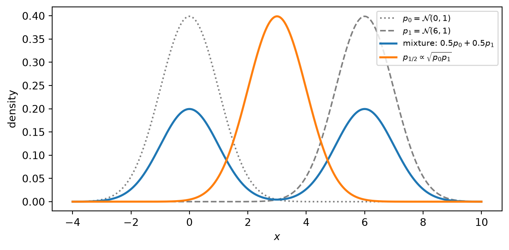
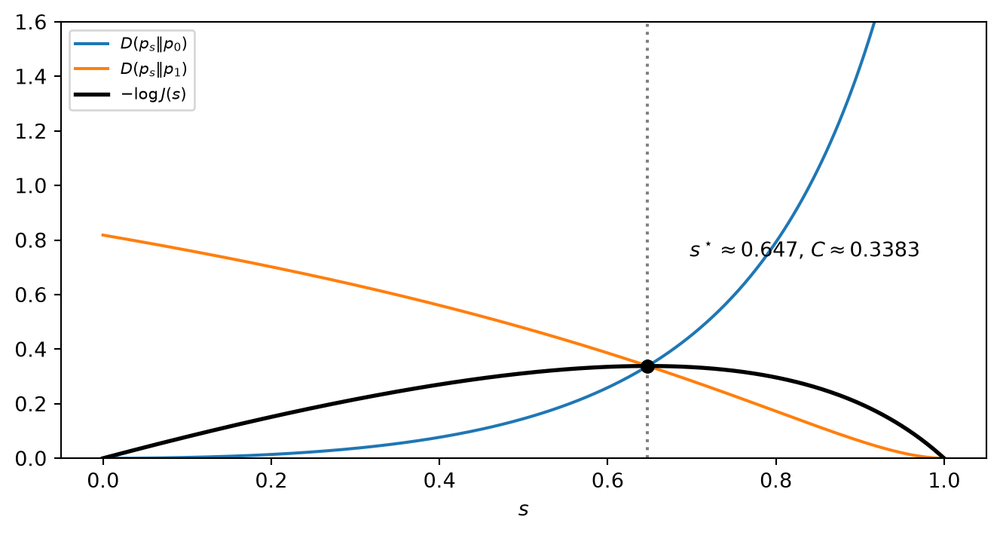

벡터 공간과 확률밀도 사이의 거리 (Vector Space & Distance between Densities)
Random Signal Theory — 선형 벡터 공간과 체, L² 공간, 내적·노름·Cauchy–Schwarz(실수·복소), 직교와 각도, 노름 공간, 밀도 집합의 비선형성, mixture 모형, 다양체 관점과 Fisher–Rao, KL 발산, Jensen 부등식, Chernoff 거리, KL–Chernoff 관계
1 개요
이 문서는 두 부분으로 이루어진다.
- 벡터 공간과 내적 공간. 신호를 벡터로 보고 길이·각도·직교성·거리를 부여하는 틀을 세운다.
- 확률밀도 사이의 거리. 확률밀도 집합은 벡터 공간이 아니므로 노름 기반 거리가 자연스럽지 않다. 이를 대신하는 도구로 mixture 모형, 다양체(manifold) 관점, Kullback–Leibler(KL) 발산, Chernoff 거리를 다루고, 마지막으로 Chernoff 거리가 특정 점에서의 KL 값과 같다는 관계를 증명한다.
전체에서 \(\log\)는 자연로그(\(\ln\))를 뜻한다. 밑을 바꾸어도 같은 밑으로 통일하기만 하면 모든 결론은 그대로 성립한다(Section 5.5.3.1).
2 선형 벡터 공간
2.1 정의와 벡터 덧셈 공리
선형 벡터 공간 \(\mathcal S\)는 원소(벡터)들의 모임에 벡터 덧셈과 스칼라 곱 두 연산이 주어지고 아래 공리를 만족하는 구조이다. 벡터는 \(x,y,z\in\mathcal S\), 스칼라는 체 \(\mathbb F\)(보통 \(\mathbb R\) 또는 \(\mathbb C\))의 원소 \(a,b\)로 쓴다.
벡터 덧셈 공리
- 폐쇄성: \(x,y\in\mathcal S\Rightarrow x+y\in\mathcal S\)
- 교환법칙: \(x+y=y+x\)
- 결합법칙: \((x+y)+z=x+(y+z)\)
- 영벡터: 모든 \(x\)에 대해 \(x+0=x\)인 \(0\in\mathcal S\)가 존재
- 덧셈 역원: 각 \(x\)에 대해 \(x+(-x)=0\)인 \((-x)\in\mathcal S\)가 존재
2.2 스칼라와 체
스칼라 곱의 공리를 적으려면 먼저 “스칼라가 무엇인가”가 정해져야 한다. 스칼라는 체(field) \(\mathbb F\)를 이룬다. 체는 덧셈과 곱셈에 대해
- 결합법칙, 교환법칙, 분배법칙 \(a(b+c)=ab+ac\)
- 덧셈 항등원 \(0\), 곱셈 항등원 \(1\)
- 모든 원소의 덧셈 역원, \(0\)이 아닌 모든 원소의 곱셈 역원 \(a^{-1}\)
을 갖는 구조이다. 마지막 조건이 체를 환(ring)과 구분하며 나눗셈을 가능하게 한다.
스칼라 곱은 사상
\[ \mathbb F\times\mathcal S\to\mathcal S,\qquad (a,x)\mapsto a\cdot x \]
이다. 결과가 다시 \(\mathcal S\)에 속한다는 것이 스칼라 곱의 폐쇄성이다.
Note체가 필요한 이유
Cauchy–Schwarz 부등식의 증명(Section 3.6)에서 최적 계수 \(a^\star=-\langle x,y\rangle/\|y\|^2\)를 쓰는데, 이는 스칼라 \(\|y\|^2\)로 나누는 연산이다. 또한 \(\mathbb F\)를 추상적으로 두면 \(\mathbb R\)과 \(\mathbb C\)를 한 번에 다룰 수 있어, 복소 기저대역 신호도 같은 틀에 들어온다.
2.3 스칼라 곱 공리
- 폐쇄성: \(a\in\mathbb F,\ x\in\mathcal S\Rightarrow a\cdot x\in\mathcal S\)
- 호환성: \(a\cdot(b\cdot x)=(ab)\cdot x\)
- 항등원: \(1\cdot x=x\), \(0\cdot x=0\) (영벡터)
- 분배법칙: \(a(x+y)=ax+ay\), \((a+b)x=ax+bx\)
2.4 예: 길이 \(N\)의 열벡터 \(\mathbb F^N\)
\[ \begin{bmatrix}x_1\\\vdots\\x_N\end{bmatrix}+\begin{bmatrix}y_1\\\vdots\\y_N\end{bmatrix}=\begin{bmatrix}x_1+y_1\\\vdots\\x_N+y_N\end{bmatrix},\qquad a\cdot\begin{bmatrix}x_1\\\vdots\\x_N\end{bmatrix}=\begin{bmatrix}ax_1\\\vdots\\ax_N\end{bmatrix} \]
성분별 연산이므로 체의 성질이 각 성분에 그대로 적용되어 모든 공리가 성립한다.
2.5 예: \(L^2(T_i,T_f)\)
\[ L^2(T_i,T_f):=\Big\{x(t):\int_{T_i}^{T_f}|x(t)|^2\,dt<\infty\Big\} \]
는 유한 에너지 신호의 집합이다. 연산은 점별로 정의한다.
\[ (x+y)(t):=x(t)+y(t),\qquad (ax)(t):=a\,x(t) \]
이 관점에서는 함수 하나가 벡터 하나이며, 시간 \(t\)가 성분의 인덱스 역할을 하는 “연속 개수의 성분을 가진 벡터”로 볼 수 있다. 유한 차원 \(\mathbb F^N\)에 대응하는 무한 차원 예이다.
“모든 벡터 공간 공리가 만족된다”는 말은 공리를 하나씩 검증하면 전부 통과한다는 뜻이다. 검증은 두 부류로 나뉜다.
(1) 점별 연산에서 물려받는 공리. 각 시점 \(t\)에서 연산은 스칼라 \(x(t),y(t)\in\mathbb F\) 사이의 연산이므로 체의 성질이 그대로 옮겨진다. 예컨대 교환법칙은
\[ (x+y)(t)=x(t)+y(t)=y(t)+x(t)=(y+x)(t)\quad\forall t \]
이다. 결합·분배법칙, 호환성, \(1\cdot x=x\)도 같다. 영벡터는 영함수 \(0(t)\equiv0\), 역원은 \((-x)(t):=-x(t)\)이다.
(2) 실제로 확인해야 하는 공리: 폐쇄성. 합이나 스칼라 배가 에너지 무한대로 튀어나가지 않아야 한다.
- 스칼라 배: \[ \int|ax|^2\,dt=|a|^2\int|x|^2\,dt<\infty \]
- 합: \((|u|-|v|)^2\ge0\)에서 \(2|u||v|\le|u|^2+|v|^2\)이므로 \[ |u+v|^2\le(|u|+|v|)^2\le2|u|^2+2|v|^2 \] 을 각 \(t\)에 적용하고 적분하면 \[ \int|x+y|^2\,dt\le2\int|x|^2\,dt+2\int|y|^2\,dt<\infty \]
영함수와 \(-x\)도 \(L^2\)에 속하므로 (d), (e)의 존재 조건이 \(L^2\) 안에서 충족된다.
Warning엄밀한 정의: 동치류
\(L^2\)의 원소는 엄밀히 거의 어디서나(a.e.) 같은 함수들의 동치류이며, 가측 함수여야 한다. 벡터 공간 공리만 볼 때는 구분이 필요 없지만, 내적의 양의 정부호성 \(\langle x,x\rangle=0\Rightarrow x=0\)에서는 필요하다. 측도 0인 집합에서만 0이 아닌 함수는 \(\int|x|^2=0\)이지만 영함수와 다르기 때문이다.
3 내적 공간
3.1 내적의 공리 (1–3)
실수 벡터 공간에서 내적은 사상 \(\langle\cdot,\cdot\rangle:\mathcal S\times\mathcal S\to\mathbb R\)로, 두 벡터에 스칼라를 대응시켜 길이·각도·직교성의 개념을 만든다.
- 대칭성: \(\langle x,y\rangle=\langle y,x\rangle\)
- 첫 번째 자리에서의 동차성: \(\langle ax,y\rangle=a\langle x,y\rangle\)
- 첫 번째 자리에서의 가법성: \(\langle x+y,z\rangle=\langle x,z\rangle+\langle y,z\rangle\)
2)와 3)을 합치면 첫 번째 자리에 대한 선형성 \(\langle ax+by,z\rangle=a\langle x,z\rangle+b\langle y,z\rangle\)이다.
3.1.1 두 번째 자리의 선형성은 유도된다
“first slot”만 적는 것은 두 번째 자리에서 성립하지 않아서가 아니라, 대칭성에서 유도되므로 공리로 적을 필요가 없기 때문이다.
\[ \langle x,ay\rangle\overset{(1)}{=}\langle ay,x\rangle\overset{(2)}{=}a\langle y,x\rangle\overset{(1)}{=}a\langle x,y\rangle \]
\[ \langle x,y+z\rangle\overset{(1)}{=}\langle y+z,x\rangle\overset{(3)}{=}\langle y,x\rangle+\langle z,x\rangle\overset{(1)}{=}\langle x,y\rangle+\langle x,z\rangle \]
따라서 실수 내적은 두 자리 모두에서 선형인 쌍선형(bilinear) 형식이다. 대칭성이 있으면 한쪽 선형성만 요구해도 나머지가 따라오므로, 공리를 최소로 적는 관례를 따른 것이다.
3.1.2 이 구분이 실제로 중요해지는 경우
(a) 복소수 체. 대칭성이 켤레 대칭성 \(\langle x,y\rangle=\overline{\langle y,x\rangle}\)로 바뀌면
\[ \langle x,ay\rangle=\overline{\langle ay,x\rangle}=\overline{a\langle y,x\rangle}=\bar a\,\langle x,y\rangle \]
이 되어 두 번째 자리는 켤레 선형이다(sesquilinear). 이때는 어느 자리가 선형인지가 실제 내용을 가진다. 수학 쪽은 보통 첫 자리 선형, 물리 쪽은 두 번째 자리 선형 관례를 쓴다.
(b) 대칭성은 자동이 아니다. \(\langle x,y\rangle_K=x^TKy\)는 임의의 행렬 \(K\)에 대해 두 자리 모두 선형이지만,
\[ \langle y,x\rangle_K=y^TKx=(y^TKx)^T=x^TK^Ty \]
이므로 \(K=K^T\)일 때만 대칭이다. 커널 내적에서 “symmetric”은 공리 1)에, “positive-definite”는 공리 4)에 대응한다.
3.2 양의 정부호성과 유도 노름
- 양의 정부호성: \(x\ne0\)이면 \(\langle x,x\rangle>0\)이고, \(\langle0,0\rangle=0\).
\(\langle0,0\rangle=0\)은 사실 정리이다. 공리 2)에서 \(\langle0,y\rangle=\langle0\cdot y,y\rangle=0\cdot\langle y,y\rangle=0\)이 나온다. 실질적인 요구는 영이 아닌 벡터의 자기 내적이 엄격하게 양수라는 것이다(non-degeneracy).
유도 노름
\[ \|x\|:=\sqrt{\langle x,x\rangle} \]
은 4) 덕분에 실수로 잘 정의되고, \(\|x\|=0\iff x=0\)이 성립한다.
내적 공간은 모든 원소 쌍에 대해 내적이 정의된 선형 벡터 공간이다.
3.2.1 1)~3)만으로는 4)가 나오지 않는다: 반례
| \(K\) | \(\langle x,x\rangle=x^TKx\) | 위반되는 것 | |
|---|---|---|---|
| 정부호 | \(\mathrm{diag}(1,1)\) | \(x\ne0\Rightarrow>0\) | 없음 |
| 준정부호 | \(\mathrm{diag}(1,0)\) | \(x_1^2\ge0\), \(x=(0,1)\)에서 \(0\) | 4)의 등호 조건 |
| 부정부호 | \(\mathrm{diag}(1,-1)\) | \(x_1^2-x_2^2\), \(x=(0,1)\)에서 \(-1\) | 4) 전체, 노름 자체 |
세 경우 모두 1)~3)은 만족한다. 부정부호의 경우 \(\langle x,y\rangle=x_1y_1-x_2y_2\)이며(Minkowski 계량과 같은 형태), \(x=(0,1)\)에서
\[ \langle x,x\rangle=0^2-1^2=-1 \]
이다. 유클리드 내적이라면 \(0^2+1^2=1\)이므로 두 번째 항의 부호 하나가 4)의 성립 여부를 가른다. 4)가 깨지면 다음 문제가 생긴다.
- 노름이 정의되지 않는다: \(\sqrt{-1}\).
- 영이 아닌데 “길이 0”인 벡터: \(x=(1,1)\)이면 \(\langle x,x\rangle=1-1=0\) (null 벡터).
- Cauchy–Schwarz 증명이 무너진다: \(x=(0,1)\), \(y=(1,0)\)이면 \(x+ay=(a,1)\)이고 \[ f(a)=\langle x+ay,x+ay\rangle=a^2-1 \] 은 \(|a|<1\)에서 음수이다. “\(f(a)\ge0\)”이라는 출발점 자체가 성립하지 않는다.
준정부호 \(\mathrm{diag}(1,0)\)에서는 \(x=(0,1)\ne0\)인데 \(\|x\|=0\)이므로, \(d(x,y)=\|x-y\|\)가 서로 다른 두 점의 거리를 \(0\)으로 만드는 semi-norm이 된다. \(x_2\) 성분을 완전히 무시하는 측정인 셈이다.
3.2.2 노름의 성질과 그 근거
| 노름 성질 | 근거 |
|---|---|
| \(\|x\|\ge0\), \(\|x\|=0\iff x=0\) | 4) |
| \(\|ax\|=|a|\,\|x\|\) | 2)와 1) |
| \(\|x+y\|\le\|x\|+\|y\|\) | Cauchy–Schwarz |
복소수 체에서는 켤레 대칭성으로 \(\langle x,x\rangle=\overline{\langle x,x\rangle}\)이 되어 \(\langle x,x\rangle\)이 실수이므로 “\(>0\)”이라는 비교가 의미를 가진다.
3.3 내적은 여러 종류가 있다
공리 1)~4)는 특정 공식이 아니라 자격 조건이다. 이를 만족하면 무엇이든 내적이고, 같은 공간 위에도 무수히 많다. \(\mathbb R^N\)에서 \(K\)가 대칭 양의 정부호이면 \(\langle x,y\rangle_K=x^TKy\)는 모두 내적이다.
예: \(K=\begin{pmatrix}2&1\\1&2\end{pmatrix}\) (고유값 \(3,1\)).
- \(x=(1,0)\), \(y=(0,1)\): 표준 내적은 \(0\)(직교)이지만 \(\langle x,y\rangle_K=1\ne0\) — 직교가 아니다.
- \(x=(1,0)\), \(y=(1,-2)\): 표준 내적은 \(1\)이지만 \(Ky=(0,-3)^T\)이므로 \(\langle x,y\rangle_K=0\) — 직교이다.
길이·각도·직교성이 모두 내적의 선택에 따라 달라지고, \(\|x\|_K=1\)인 집합은 원이 아니라 타원이 된다. 그러므로 엄밀히는 공간과 내적의 쌍 \((\mathcal S,\langle\cdot,\cdot\rangle)\)이 하나의 내적 공간이다.
| 공간 | 대표적인 내적 |
|---|---|
| \(\mathbb R^N\) | \(x^Ty\) |
| \(\mathbb C^N\) | \(y^Hx\) |
| \(L^2(T_i,T_f)\) | \(\int x(t)y(t)\,dt\) |
| 행렬 | \(\mathrm{tr}(A^TB)\) |
| 유한 분산 확률변수 | \(E[XY]\) |
마지막 줄에서 \(\|X\|^2=E[X^2]\), 직교는 무상관이고, Cauchy–Schwarz는 \(|E[XY]|^2\le E[X^2]E[Y^2]\), 즉 상관계수 \(|\rho|\le1\)이다. 이 경우에도 \(E[X^2]=0\Rightarrow X=0\) a.s.라는 동일시가 필요하다.
Tip통신에서의 예
잡음 공분산이 \(R\)인 색잡음 환경의 검출은 \(\langle x,y\rangle=x^TR^{-1}y\) 형태의 내적을 쓴다. \(K=R^{-1}\)인 경우이며 Mahalanobis 거리와 같은 구조이다. 잡음이 강한 방향은 짧게, 약한 방향은 길게 재도록 기하 자체를 바꾸는 것이다.
3.4 \(L^2\) 위의 내적: 표준 내적과 커널 내적
표준 내적 (시간별 일치)
\[ \langle x,y\rangle=\int_{T_i}^{T_f}x(t)\,y(t)\,dt \]
커널 내적 (가중·상관 일치)
\[ \langle x,y\rangle_K=\int_{T_i}^{T_f}\!\!\int_{T_i}^{T_f}x(t)\,K(t,u)\,y(u)\,dt\,du \]
\(K\)가 양의 정부호이면 \(x\ne0\)에 대해 \(\langle x,x\rangle_K>0\)이다. \(K\)는 서로 다른 시점 사이에 가중치·상관을 준다. 항등 커널 \(K(t,u)=\delta(t-u)\)이면
\[ \int\!\!\int x(t)\delta(t-u)y(u)\,dt\,du=\int x(t)y(t)\,dt \]
로 표준 내적이 된다.
3.5 노름과 예
\[ \|x\|=\langle x,x\rangle^{1/2},\qquad \|ax\|=\langle ax,ax\rangle^{1/2}=(a^2\langle x,x\rangle)^{1/2}=|a|\,\|x\| \]
- 유클리드 노름 (\(\langle x,y\rangle=x^Ty\)): \(\|x\|=\big(\sum_{i=1}^Nx_i^2\big)^{1/2}\)
- 커널 유도 노름 (\(K\) 대칭 양의 정부호): \(\|x\|_K=(x^TKx)^{1/2}\)
- 함수 공간: \(\|x\|_K=\Big(\int\!\!\int x(t)K(t,u)x(u)\,dt\,du\Big)^{1/2}\), \(K=\delta(t-u)\)이면 표준 \(L^2\) 노름.
3.6 Cauchy–Schwarz 부등식
3.6.1 실수 경우
목표: \(|\langle x,y\rangle|\le\|x\|\,\|y\|\)
\(y=0\)이면 양변이 0이므로 자명하다. \(y\ne0\)이라 하고 모든 실수 \(a\)에 대해 음이 아닌 이차식
\[ f(a):=\|x+ay\|^2\ge0 \]
을 생각한다(이 부등식 자체가 공리 4)이다). 쌍선형성과 대칭성으로 전개하면
\[ f(a)=\langle x+ay,x+ay\rangle=\|x\|^2+2a\langle x,y\rangle+a^2\|y\|^2 \]
이다. 교차항 \(\langle x,ay\rangle+\langle ay,x\rangle\)이 \(2a\langle x,y\rangle\)로 합쳐지는 데 두 자리의 선형성과 대칭성이 모두 쓰인다. 미분(또는 완전제곱)으로 최소점을 찾으면
\[ f'(a)=2\langle x,y\rangle+2a\|y\|^2=0\ \Rightarrow\ a^\star=-\frac{\langle x,y\rangle}{\|y\|^2} \]
이고, 대입하면
\[ 0\le f(a^\star)=\|x\|^2-\frac{2\langle x,y\rangle^2}{\|y\|^2}+\frac{\langle x,y\rangle^2}{\|y\|^2}=\|x\|^2-\frac{\langle x,y\rangle^2}{\|y\|^2} \]
\[ \Longrightarrow\ \langle x,y\rangle^2\le\|x\|^2\|y\|^2\ \Longrightarrow\ |\langle x,y\rangle|\le\|x\|\,\|y\| \]
등호 조건. \(f(a^\star)=0\iff x+a^\star y=0\)이므로
\[ \text{등호}\iff\exists\,c\in\mathbb R:\ x=cy \]
즉 \(x\)가 \(y\)가 생성하는 직선 위에 있을 때이다. 이 논증은 \(x\)를 \(y\) 위에 사영하는 것과 같다. \(-a^\star y\)는 \(x\)의 \(y\) 방향 사영이고, \(f(a^\star)\)는 사영 잔차의 제곱 길이이다.
3.6.2 복소수 경우
켤레 대칭성과 첫 자리 선형성을 가정하고, \(a\)는 복소수 전체에서 움직인다(\(a\)를 실수로 제한하면 \(\mathrm{Re}\langle x,y\rangle\)에 대한 부등식만 나온다).
Step 1: 전개.
\[ f(a)=\langle x,x\rangle+\langle x,ay\rangle+\langle ay,x\rangle+\langle ay,ay\rangle \]
\(\langle x,ay\rangle=\bar a\langle x,y\rangle\), \(\langle ay,x\rangle=a\overline{\langle x,y\rangle}\), \(\langle ay,ay\rangle=|a|^2\|y\|^2\)이고 가운데 두 항은 서로 켤레이므로
\[ f(a)=\|x\|^2+2\,\mathrm{Re}\big(\bar a\langle x,y\rangle\big)+|a|^2\|y\|^2 \]
두 번째 자리 선형 관례에서는 교차항이 \(2\,\mathrm{Re}\big(a\langle x,y\rangle\big)\)로 적히며, 최종 결과는 같다.
Step 2: 최적 \(a\). \(\langle x,y\rangle=|\langle x,y\rangle|e^{i\varphi}\), \(a=re^{i\theta}\)로 두면
\[ \mathrm{Re}\big(\bar a\langle x,y\rangle\big)=r|\langle x,y\rangle|\cos(\varphi-\theta) \]
\(r\) 고정 시 \(\theta=\varphi+\pi\)(위상을 정반대로)에서 최소이고, 그때
\[ f=\|x\|^2-2r|\langle x,y\rangle|+r^2\|y\|^2 \]
은 \(r^\star=|\langle x,y\rangle|/\|y\|^2\)에서 최소이다. 합치면
\[ a^\star=-r^\star e^{i\varphi}=-\frac{\langle x,y\rangle}{\|y\|^2} \]
로 실수 경우와 같은 식이다.
Step 3: 대입. \(\bar a^\star\langle x,y\rangle=-|\langle x,y\rangle|^2/\|y\|^2\), \(|a^\star|^2\|y\|^2=|\langle x,y\rangle|^2/\|y\|^2\)이므로
\[ 0\le f(a^\star)=\|x\|^2-\frac{|\langle x,y\rangle|^2}{\|y\|^2}\ \Longrightarrow\ |\langle x,y\rangle|\le\|x\|\,\|y\| \]
완전제곱으로 확인. \(c=\langle x,y\rangle/\|y\|^2\)로 두면
\[ f(a)=\|y\|^2|a+c|^2+\|x\|^2-\frac{|\langle x,y\rangle|^2}{\|y\|^2} \]
첫 항은 \(a=-c\)에서만 0이므로 최소점이 분명하다(복소 변수의 미분 없이 확인 가능).
등호 조건. \(x=cy\)이고 \(c=\langle x,y\rangle/\|y\|^2\in\mathbb C\)이므로
\[ \text{등호}\iff\exists\,c\in\mathbb C:\ x=cy \]
Tip정합필터와의 연결
복소 기저대역에서 \(|\langle x,y\rangle|\le\|x\|\|y\|\)는 정합필터 출력의 상한이다. 등호는 \(y\)가 \(x\)의 복소 스칼라 배, 즉 위상 회전을 허용하고 일치할 때이다. 위상을 모르는 비동기 검출이 \(|\langle x,y\rangle|\)를 쓰는 이유이다.
3.7 직교와 각도
- 직교: \(\langle x,y\rangle=0\)
- 각도의 코사인 (\(x,y\ne0\)): \[ \cos(x,y)=\frac{\langle x,y\rangle}{\|x\|\,\|y\|} \] \(x\to ax\), \(y\to by\) (\(a,b>0\))로 바꿔도 변하지 않는다(음수 배는 부호만 바뀐다).
귀결
- Cauchy–Schwarz에서 \(|\cos(x,y)|\le1\).
- 직교이고 영이 아니면 \(\cos=0\), 각도 \(\pm\pi/2\).
- \(|\langle x,y\rangle|=\|x\|\|y\|\iff x\propto y\)이면 \(\cos=\pm1\), 각도 \(0\) 또는 \(\pi\).
- \(x=0\) 또는 \(y=0\)이면 각도는 정의되지 않지만 \(\langle x,y\rangle=0\)이므로 직교는 성립한다.
복소 공간에서는 \(\langle x,y\rangle/(\|x\|\|y\|)\)가 절댓값 1 이하의 복소수이므로, 각도를 \(|\langle x,y\rangle|/(\|x\|\|y\|)\) 또는 \(\mathrm{Re}\langle x,y\rangle/(\|x\|\|y\|)\)로 정의한다.
3.8 노름 공간
노름 공간에서 거리는 \(d(x,y)=\|x-y\|\)이며 다음을 만족한다.
- (M1) 대칭성: \(d(x,y)=d(y,x)\)
- (M2) 구별 불가능한 것의 동일성: \(d(x,y)=0\iff x=y\)
- (M3) 삼각부등식: \(d(x,y)\le d(x,z)+d(z,y)\), 노름 형태로는 \(\|x+y\|\le\|x\|+\|y\|\)
내적 노름의 삼각부등식 증명.
\[ \|x+y\|^2=\|x\|^2+2\langle x,y\rangle+\|y\|^2\le\|x\|^2+2\|x\|\|y\|+\|y\|^2=(\|x\|+\|y\|)^2 \]
Cauchy–Schwarz의 출발점이 공리 4)였으므로, 4) ⇒ Cauchy–Schwarz ⇒ 삼각부등식의 순서이다.
\(p\)-노름 (\(p\ge1\)):
\[ \|x\|_p=\Big(\sum_{n=1}^N|x_n|^p\Big)^{1/p},\qquad \|f\|_p=\Big(\int|f(x)|^p\,dx\Big)^{1/p} \]
수렴: \(x_n\to x\iff\lim_{n\to\infty}\|x_n-x\|=0\)
3.8.1 구조의 계층
\[ \text{내적 공간}\ \Rightarrow\ \text{노름 공간}\ \Rightarrow\ \text{거리 공간} \]
내적이 노름을, 노름이 거리를 유도한다. 역은 성립하지 않는다. 노름이 내적에서 유도되는 것은 평행사변형 법칙
\[ \|x+y\|^2+\|x-y\|^2=2\|x\|^2+2\|y\|^2 \]
과 동치이며(Jordan–von Neumann), \(p\)-노름은 \(p=2\)일 때만 이를 만족한다. 따라서 각도와 직교성은 \(p=2\)에서만 정의된다.
내적 공간의 정의에는 완비성이 포함되지 않는다. 유도 거리에 대해 모든 코시 수열이 수렴하는 내적 공간을 Hilbert 공간이라 하며, \(L^2\)가 대표적인 예이다.
4 확률밀도 사이의 거리
4.1 확률밀도에 요구되는 성질
밀도 \(p\)에 요구되는 기본 성질은
\[ p(x)\ge0\quad\forall x,\qquad \int p(x)\,dx=1 \]
이고, KL과 Chernoff를 다루려면 다음 기술적 조건이 추가로 깔린다.
| 성질 | 역할 |
|---|---|
| \(\int p=1\) | 정규화 |
| \(p\ge0\) | 유효한 밀도, 로그 정의의 전제 |
| 비교하는 두 밀도가 같은 공간·같은 기준 측도 | \(\int p_1\log(p_1/p_0)\,dx\)가 의미를 가짐 |
| \(p_1\)의 support \(\subseteq p_0\)의 support | 위반 시 \(D(p_1\|p_0)=\infty\) |
측도론적으로 밀도는 기준 측도 \(\mu\)(Lebesgue 또는 계수 측도)에 대한 Radon–Nikodym 도함수이다. 따라서 연속성이나 유계성은 필요 없고 a.e.로만 정의되며, 이산의 경우 \(\int p=1\)은 \(\sum p=1\)이 된다.
4.2 밀도 집합은 벡터 공간이 아니다
밀도들이 벡터 공간을 이룬다면 \(d(p,q)=\|p-q\|\)로 거리를 정의할 수 있을 것이다. 그러나 밀도 집합
\[ \mathcal P=\{p:\ p\ge0,\ \textstyle\int p=1\} \]
은 벡터 공간 공리를 만족하지 않는다.
| 공리 | 결과 | 이유 |
|---|---|---|
| 덧셈 폐쇄성 | 실패 | \(\int(p+q)=2\ne1\) |
| 영벡터 | 실패 | 영함수는 \(\int0=0\ne1\) |
| 덧셈 역원 | 실패 | \(-p\le0\), \(\int(-p)=-1\) |
| 스칼라 곱 폐쇄성 | 실패 | \(\int(ap)=a\)이므로 \(a=1\)이어야 함 |
4.2.1 영벡터의 적분은 왜 0인가
함수 공간에서 영벡터는 영함수이고, 적분은 선형 범함수
\[ \int(af+bg)\,dx=a\int f\,dx+b\int g\,dx \]
이므로 \(a=0\)을 넣으면 \(\int0\,dx=0\)이다. “선형 사상은 영벡터를 영으로 보낸다”는 원리이다. 이는 벡터 공간의 공리가 아니라 함수 공간에서 나오는 사실이며, \(\mathbb R^N\) 같은 일반 벡터 공간에는 적분 연산이 없다.
4.2.2 근본 원인: 아핀 제약
| 제약 | 성격 | 영벡터 포함 | 부분공간 |
|---|---|---|---|
| \(\int f=0\) | 동차 선형 제약 | 포함 | 됨 |
| \(\int f=1\) | 비동차(아핀) 제약 | 불포함 | 안 됨 |
\(\int f=c\)인 집합은 \(c=0\)일 때만 원점을 지난다. \(c=1\)이면 원점을 지나지 않는 평행이동된 초평면이다. 위 표의 네 가지 실패는 모두 이 한 사실의 다른 모습이다. 이산 버전에서 확률질량함수의 집합은 원점을 지나지 않는 단체(simplex)이다.
4.2.3 살아남는 연산과 미묘한 점
- 볼록 결합은 살아남는다: \(a\in[0,1]\)이면 \((1-a)p+aq\ge0\)이고 \(\int=1\). 즉 \(\mathcal P\)는 벡터 공간은 아니지만 볼록 집합이다.
- 두 밀도의 차는 \(\int(p-q)=0\)이므로 선형 부분공간 \(V_0=\{f\in L^1:\int f=0\}\)에 속한다. \(\mathcal P\)는 아핀 공간이고 그 방향 공간이 \(V_0\)이다. 따라서 \(\|p-q\|_1\)(total variation의 두 배)이나 \(\|p-q\|_2\) 같은 거리는 정의 가능하다.
정확한 진술은 “\(\mathcal P\) 자체는 벡터 공간이 아니므로 \(p\)의 길이를 묻는 것은 무의미하지만, 더 큰 벡터 공간에 들어 있어 거리를 줄 수는 있다”이다. 그럼에도 KL·Chernoff로 가는 이유는 선형 기하가 밀도 사이의 구별 가능성과 잘 맞지 않기 때문이다(Section 4.4). 예컨대 독립 성분에 대한 가법성은 KL에는 있지만 \(L^1\) 거리에는 없고, 가설검정의 오류 지수와 직접 연결되는 것도 Chernoff이다.
거리 같은 표현은 음이 아니어야 하고, 그 과정에서 나오는 구성 요소를 밀도로 해석할 때는 면적이 1이어야 한다. 아래의 \(p_d\)(mixture의 이탈 성분)와 \(p_s=p_0^{1-s}p_1^s/J(s)\)의 정규화가 이 요구를 따른다.
4.3 Mixture 모형
목표 밀도를 기준 밀도 \(p_0\)와 이탈 밀도 \(p_d\)의 볼록 결합으로 표현한다.
\[ p(x)=(1-a)\,p_0(x)+a\,p_d(x),\qquad 0\le a\le1 \]
- \(p_0\): 기준(nominal) 밀도, \(p_d\): 이탈 성분(그 자체로 유효한 밀도)
- \(a=0\)이면 \(p=p_0\)이고, \(a\)는 \(p_d\) 방향으로의 이탈 정도를 나타내는 척도이다.
- 한계: 모든 \(p\)가 임의의 \(p_0\)와 하나의 \(p_d\)로 표현되지는 않는다.
4.3.1 표현 가능 조건
\(p_d\)에 대해 풀면
\[ p_d(x)=\frac{p(x)-(1-a)\,p_0(x)}{a} \]
\(\int p_d=1\)은 자동으로 만족하므로 남는 조건은 \(p_d\ge0\), 즉
\[ p(x)\ge(1-a)\,p_0(x)\quad\forall x \]
이다. \(p\)가 \(p_0\)의 \((1-a)\)배를 전 구간에서 위로 덮어야 한다. \(p_0>0\)인 곳에서 정리하면
\[ 1-a\le\operatorname*{ess\,inf}_x\frac{p(x)}{p_0(x)}=:w^\star,\qquad a_{\min}=1-w^\star \]
이다. \(p_0\)가 \(p\)에 섞여 들어가려면 \(p_0\)의 support가 \(p\)의 support 안에 있어야 한다.
4.3.2 Uniform vs Gaussian
\(p=\frac1L\mathbf 1_{[0,L]}\), \(p_0=\mathcal N(\mu,\sigma^2)\)이면 \([0,L]\) 바깥에서 \(p=0\), \(p_0>0\)이므로 조건은 \(0\ge(1-a)p_0(x)>0\), 곧 \(a=1\)이다. \(a=1\)이면 \(p=p_d\)로 \(p_0\)와 무관한 자명한 표현이므로, \(a<1\)인 어떤 \(p_d\)로도 불가능하다. Gaussian을 양의 가중치로 섞으면 꼬리가 전 구간에 퍼지는데, 음이 아닌 함수를 더해서는 그 꼬리를 지울 수 없다.
\(p_d\)를 미리 고정하면 표현 가능한 \(p\)는 \(p_0\)와 \(p_d\)를 잇는 선분 위의 점들뿐이다.
4.3.3 KL과의 연결
표현 가능 조건은 \(p_0/p\le\frac1{1-a}\)이므로
\[ D(p_0\|p)=E_{p_0}\Big[\log\frac{p_0}{p}\Big]\le\log\frac1{1-a}<\infty \]
이다. Uniform vs Gaussian에서는 \(p=0<p_0\)인 점이 있어 \(D(p_0\|p)=\infty\)이므로, mixture 표현 불가능성과 \(D(p_0\|p)=\infty\)는 같은 사실이다. 반대 방향 \(D(p\|p_0)\)는 유한하다. mixture의 표현 가능성에도 KL처럼 방향성이 있다.
4.4 다양체(Manifold) 관점
밀도를 선형 공간에 억지로 넣지 말고, 허용 가능한 밀도의 집합을 곡면 같은 대상(manifold)으로 보자는 것이다. 다양체는 국소적으로는 평평하여 접선·측지선 등을 정의할 수 있지만, 전체적으로는 휘어 있을 수 있다. 이 위에서 거리는 선형 노름이 아니라 측지 거리나 정보기하적 거리(Fisher–Rao 등)로 잰다.
4.4.1 직관: 자의 눈금이 위치마다 달라야 한다
선형 공간의 거리 \(\|p-q\|\)는 차이 \(p-q\)에만 의존한다. 자의 눈금이 어디서나 같다. 그런데 분포 사이의 “다른 정도”는 얼마나 구별하기 쉬운가로 재는 것이 자연스럽고, 이는 위치에 따라 달라진다.
예 1: 같은 파라미터 차이, 다른 구별 난이도. \(\mathcal N(0,\sigma^2)\)에서
- \(\sigma=0.01\) vs \(0.02\): 폭이 두 배 — 샘플 몇 개로 구별된다.
- \(\sigma=10\) vs \(10.01\): 사실상 같은 분포이다.
\(|\Delta\sigma|=0.01\)로 같지만, Fisher–Rao 거리는 \(\sigma\) 방향 Fisher 정보 \(2/\sigma^2\)에서
\[ d=\int_{\sigma_1}^{\sigma_2}\frac{\sqrt2}{\sigma}\,d\sigma=\sqrt2\,\Big|\ln\frac{\sigma_2}{\sigma_1}\Big| \]
로 각각 약 \(0.98\), \(0.0014\)이다. \(\sigma\)가 작은 곳에서 눈금이 촘촘하다.
예 2: 지도의 경도. 경도 1°의 실제 거리는 적도에서 약 111 km, 위도 60°에서 약 55 km이다. 좌표 차이가 같아도 실제 거리는 위치에 따라 다르므로, 위치마다 눈금을 보정하는 규칙(metric)이 필요하다. 이 비유는 “눈금이 위치에 따라 변한다”는 점까지만 정확하며, Gaussian 족의 실제 기하는 쌍곡 기하이다.
예 3: 두 분포를 잇는 경로. \(\mathcal N(0,1)\)에서 \(\mathcal N(6,1)\)로 가는 중간점을 두 방식으로 만들면 아래 그림과 같다. 밀도 값을 섞으면 쌍봉 분포가 되고, 로그 밀도를 섞으면 봉우리 하나가 이동한다.
4.4.2 용어 정리
| 용어 | 의미 |
|---|---|
| Manifold | 모든 점의 근방이 \(\mathbb R^n\)의 열린 집합과 매끄럽게 대응되는 공간. 대응을 chart(좌표계)라 한다. |
| Tangent space | 한 점에서 곡선들의 속도 벡터의 모임. 국소적 평면 근사이며 벡터 공간이다. |
| Riemannian metric | 각 점의 접공간에 지정한 내적 \(g_P(\cdot,\cdot)\). 점마다 달라질 수 있다. |
| Geodesic | 두 점을 잇는 곡선 중 길이가 국소적으로 최소인 곡선(곡면 위의 “직선”). |
곡선 \(\gamma(t)\)의 길이와 측지 거리는
\[ L(\gamma)=\int\sqrt{g_{\gamma(t)}\big(\dot\gamma(t),\dot\gamma(t)\big)}\,dt,\qquad d(P,Q)=\inf_{\gamma:P\to Q}L(\gamma) \]
이다. “내적이 노름을 만든다”가 점마다 달라지는 내적으로 확장된 것이다.
4.4.3 다양체의 예
- 원 \(x^2+y^2=1\): 2차원 평면 속 1차원 다양체. 작은 호는 직선 조각처럼 보인다.
- 원, 포물선, 쌍곡선, 3차 곡선: 모두 1차원 다양체이며 닫혀 있거나 열려 있거나 무한히 뻗을 수 있다.
- 구면, 토러스, 이중 토러스, Klein 병 등: 2차원 다양체. 곡면 안에서의 거리는 곡률을 따르는 측지선으로 잰다. 구면에서는 대원이 측지선이며, 대륙 간 비행 경로가 휘어 보이는 이유이다.
4.4.4 밀도를 다양체로 보는 이유
- 밀도 집합 자체가 제약 곡면이다. \(\psi=\sqrt p\)로 치환하면 \[ \int p=1\iff\int\psi^2=1\iff\|\psi\|_{L^2}=1 \] 이므로 정규화 제약은 \(L^2\) 단위구면 위에 있다는 조건이다.
- 파라메트릭 모형은 다양체의 좌표계이다. \(p(x;\theta)\)에서 \(\theta\)가 chart이다. \(\mathcal N(\mu,\sigma^2)\) 전체는 \((\mu,\sigma)\)를 좌표로 하는 2차원 다양체이다.
- 좌표에 불변인 거리가 필요하다. \(\|\theta_1-\theta_2\|\)는 \(\sigma\) 대신 \(\sigma^2\)로 매개화하는 순간 바뀐다. 분포 사이의 떨어진 정도는 매개화와 무관해야 한다.
4.4.5 자연스러운 metric: Fisher 정보
score \(s=\nabla_\theta\log p(x;\theta)\), \(\delta=d\theta\)로 두고 이웃한 두 분포의 KL을 전개하면
\[ D\big(p_\theta\|p_{\theta+\delta}\big)=E_\theta\big[\log p_\theta-\log p_{\theta+\delta}\big]=-E_\theta[s]^T\delta-\tfrac12\delta^TE_\theta\big[\nabla^2\log p\big]\delta+O(\|\delta\|^3) \]
이다. \(E_\theta[s]=\int\nabla p\,dx=\nabla\!\int p\,dx=0\)이므로 1차항이 사라지고, \(I(\theta)=-E[\nabla^2\log p]\)로
\[ D\big(p_\theta\|p_{\theta+\delta}\big)\approx\tfrac12\,\delta^TI(\theta)\,\delta \]
이다. KL은 작은 이동에 대해 \(I(\theta)\)가 정의하는 국소 내적의 제곱 길이이다. \(I(\theta)\)를 metric으로 택한 것이 Fisher–Rao 계량이며, 재매개화에 대해 텐서처럼 변환하므로 불변 거리를 준다.
분산을 아는 Gaussian 평균 족에서는 \(I=1/\sigma^2\)이므로
\[ d_{FR}(\mu_1,\mu_2)=\frac{|\mu_1-\mu_2|}{\sigma} \]
로 평균 차이를 표준편차 단위로 잰다. 신호점 간격 \(d\)와 잡음 표준편차 \(\sigma\)의 비가 오류 확률을 결정하는 것과 같은 구조이다.
\(\sqrt p\) 구면 위에서 Fisher 계량은 구면 계량의 4배이므로, 측지 거리는 대원 거리의 2배로
\[ d_{FR}(p,q)=2\arccos\int\sqrt{p\,q}\,dx \]
이다. \(\int\sqrt{pq}\,dx\)는 뒤에 나오는 Bhattacharyya 계수 \(J(\tfrac12)\)이다.
4.4.6 세 종류의 “직선”
| 곡선 | 식 | 직선이 되는 좌표 |
|---|---|---|
| m-geodesic (mixture) | \((1-a)p_0+a\,p_1\) | 밀도 \(p\) |
| e-geodesic (exponential) | \(p_0^{1-s}p_1^s/J(s)\) | 로그 밀도 \(\log p\) |
| Fisher–Rao geodesic | \(\sqrt p\) 구면의 대원 | \(\sqrt p\) |
Chernoff 거리에서 쓰는 곡선 \(p_s\)는 흔히 geodesic family라 부르지만, 엄밀히는 Fisher–Rao 측지선이 아니라 e-geodesic이다.
4.4.7 요약
| 선형 공간 관점 | 다양체 관점 |
|---|---|
| \(d=\|p-q\|\) | 곡면 위 최단 경로의 길이 |
| 내적이 하나 | 점마다 다른 내적(metric) |
| 눈금이 어디서나 동일 | 위치마다 다를 수 있음 |
| 중간점 = 값의 평균 | 분포가 이동하는 경로 |
| 좌표 의존 | 좌표 불변 |
선형 공간 방식이 틀린 것은 아니다. \(L^1\), \(L^2\) 거리도 유효하다. 다만 가설검정의 오류 확률처럼 구별 난이도가 핵심인 문제에서는 정보기하 쪽이 자연스럽다.
5 Kullback–Leibler 발산과 Chernoff 거리
5.1 KL 발산의 정의와 해석
같은 공간 위의 두 밀도 \(p_0,p_1\)에 대해
\[ D(p_1\|p_0)=\int p_1(x)\log\frac{p_1(x)}{p_0(x)}\,dx \]
5.1.1 왜 “\(p_1\) 아래에서의 기대 로그우도비”인가
로그우도비(LLR)
\[ \Lambda(x)=\log\frac{p_1(x)}{p_0(x)} \]
는 관측 \(x\)가 \(p_1\)과 \(p_0\) 중 어느 쪽에서 나왔는지에 대한 증거의 세기이다(\(\Lambda>0\)이면 \(p_1\) 쪽). \(\Lambda(X)\)는 확률변수이며, 정의에서 가중치로 \(p_1\)이 곱해져 있으므로
\[ D(p_1\|p_0)=E_{X\sim p_1}\big[\Lambda(X)\big] \]
이다. 데이터가 실제로 \(p_1\)에서 i.i.d.로 나오면 큰 수의 법칙에 의해
\[ \frac1n\sum_{i=1}^n\log\frac{p_1(X_i)}{p_0(X_i)}\xrightarrow{\text{a.s.}}D(p_1\|p_0) \]
즉 진실이 \(p_1\)일 때 샘플 하나당 \(p_1\) 쪽으로 쌓이는 평균 증거량이다. 엔트로피로 쓰면
\[ D(p_1\|p_0)=\underbrace{-\!\int p_1\log p_0\,dx}_{H(p_1,p_0)}-\underbrace{\Big(-\!\int p_1\log p_1\,dx\Big)}_{H(p_1)} \]
5.1.2 “\(p_0\)가 \(p_1\)을 얼마나 잘 대신하는가”
“stand in for”는 대역·대용으로 쓰다라는 뜻이다. 진짜 분포 \(p_1\) 대신 모형 \(p_0\)를 쓸 때의 손해가 \(D(p_1\|p_0)\)이다.
- 부호화 해석: 분포 \(q\)로 설계한 최적 부호는 기호 \(x\)에 길이 \(-\log q(x)\)를 준다. 실제가 \(p_1\)일 때 \(p_1\)로 설계하면 평균 \(H(p_1)\), \(p_0\)로 설계하면 \(H(p_1)+D(p_1\|p_0)\)이다. \(D\)는 틀린 모형 때문에 샘플당 낭비하는 nat 수이다.
- 모형 적합 해석: 최대우도로 \(p_\theta\)를 맞추면 평균 로그우도가 \(E_{p_1}[\log p_\theta]\)로 수렴하고, 이를 최대화하는 것은 \(D(p_1\|p_\theta)\) 최소화와 같다. 인수 순서가 (진실 ‖ 모형)인 이유이다.
비대칭성의 원인. 가중치가 \(p_1\)이므로 \(p_1\)이 질량을 가진 곳에서 \(p_0\)가 작으면 큰 벌점(\(p_0=0\)이면 \(\infty\))을 받지만, \(p_1=0\)인 곳에서 \(p_0\)가 질량을 가져도 벌점이 없다. 모형이 진실보다 넓게 퍼지는 것은 괜찮고, 좁은 것은 치명적이다.
예.
- \(p_1=\mathrm{Bern}(\tfrac12)\), \(p_0=\mathrm{Bern}(\tfrac14)\): \[ D(p_1\|p_0)=\tfrac12\ln2+\tfrac12\ln\tfrac23=\tfrac12\ln\tfrac43\approx0.1438,\qquad D(p_0\|p_1)=\tfrac14\ln\tfrac12+\tfrac34\ln\tfrac32\approx0.1308 \]
- \(p_1=U[0,1]\), \(p_0=U[0,2]\): \(D(p_1\|p_0)=\int_0^1\ln2\,dx=\ln2\), \(D(p_0\|p_1)=\infty\).
5.2 Jensen 부등식
볼록 함수 \(f\)와 확률 \(p_k\ge0\), \(\sum p_k=1\)에 대해
\[ \sum_{k=1}^np_kf(X_k)\ge f\Big(\sum_{k=1}^np_kX_k\Big) \]
기저 (\(n=2\)). 볼록성의 정의 \(f(\lambda u+(1-\lambda)v)\le\lambda f(u)+(1-\lambda)f(v)\) 그 자체이다.
귀납 단계. \(n\)에서 성립한다고 하고, \(p_{n+1}<1\)일 때 \(\tilde p_k=\frac{p_k}{1-p_{n+1}}\)로 두면 \(\sum_{k=1}^n\tilde p_k=1\)이다(\(p_{n+1}=1\)이면 자명).
\[ \sum_{k=1}^{n+1}p_kf(X_k)=(1-p_{n+1})\sum_{k=1}^n\tilde p_kf(X_k)+p_{n+1}f(X_{n+1}) \]
첫 항에 귀납 가정을 적용하면
\[ \ge(1-p_{n+1})\,f\Big(\sum_{k=1}^n\tilde p_kX_k\Big)+p_{n+1}f(X_{n+1}) \]
이고, 두 점 \(\sum\tilde p_kX_k\)와 \(X_{n+1}\)에 2점 Jensen을 적용하면
\[ \ge f\Big((1-p_{n+1})\sum_{k=1}^n\tilde p_kX_k+p_{n+1}X_{n+1}\Big)=f\Big(\sum_{k=1}^{n+1}p_kX_k\Big) \]
마지막 등호는 \((1-p_{n+1})\tilde p_k=p_k\)이기 때문이다. 연속형 \(E[f(X)]\ge f(E[X])\)는 극한으로 확장된다. \(f\)가 엄격 볼록이면 등호는 \(X\)가 (a.s.) 상수일 때만 성립한다.
5.3 KL의 기본 성질 증명
\(S_1=\{x:p_1(x)>0\}\)로 두고, \(p_1=0\)인 곳은 관례 \(0\log\frac0{\cdot}=0\)으로 처리한다.
5.3.1 \(D(p_1\|p_0)\ge0\)
Jensen 증명. \(f(u)=-\log u\)는 \(f''(u)=1/u^2>0\)이므로 볼록이다. \(U=p_0(X)/p_1(X)\)로 두면 \(D=E_{p_1}[f(U)]\)이고
\[ D(p_1\|p_0)\ge-\log E_{p_1}\Big[\frac{p_0(X)}{p_1(X)}\Big]=-\log\int_{S_1}p_0(x)\,dx\ge-\log1=0 \]
두 밀도의 support가 같으면 \(\int_{S_1}p_0=1\)이고, 일반적으로는 \(\int_{S_1}p_0\le1\)이지만 \(-\log\)가 감소함수이므로 부등호 방향은 유지된다.
Gibbs 증명. \(u>0\)에서 \(\log u\le u-1\)(등호는 \(u=1\))이므로 \(-\log\frac{p_0}{p_1}\ge1-\frac{p_0}{p_1}\)이고
\[ D\ge\int_{S_1}p_1\Big(1-\frac{p_0}{p_1}\Big)dx=1-\int_{S_1}p_0\,dx\ge0 \]
5.3.2 \(D=0\iff p_1=p_0\) a.e.
(\(\Leftarrow\)) \(\log(p_1/p_0)=0\) a.e.이므로 \(D=0\).
(\(\Rightarrow\)) Gibbs 증명의 두 부등식이 모두 등호여야 한다. 첫째는 \(p_0/p_1=1\) (\(p_1\)-a.e.), 둘째는 \(\int_{S_1}p_0=1\), 즉 \(S_1\) 밖에서 \(p_0=0\) a.e.이다. 따라서 \(p_0=p_1\) a.e. Jensen 쪽에서 보면 \(-\log\)가 엄격 볼록이므로 \(U\)가 상수여야 하고, 그 상수 \(c\)는 \(-\log c=0\)에서 \(1\)이다.
5.3.3 support 불일치
\(p_0(x)=0<p_1(x)\)인 점들이 양의 측도를 가지면 그곳에서 \(\log(p_1/p_0)=\infty\)이고 가중치 \(p_1>0\)이므로 \(D(p_1\|p_0)=\infty\)이다. \(p_1(x)=0\)인 점은 관례 \(0\log\frac{0}{p_0}=0\)으로 기여가 없다.
5.3.4 독립 성분에 대한 가법성
\(p_0(\mathbf x)=\prod_\ell p_{0}(x_\ell)\), \(p_1(\mathbf x)=\prod_\ell p_{1}(x_\ell)\)이면
\[ \log\frac{p_1(\mathbf x)}{p_0(\mathbf x)}=\sum_\ell\log\frac{p_1(x_\ell)}{p_0(x_\ell)} \]
이고, \(p_1\) 아래에서 각 항의 기대값은 \(x_\ell\)의 주변분포에만 의존하므로
\[ D(p_1\|p_0)=\sum_\ell D\big(p_1(x_\ell)\,\|\,p_0(x_\ell)\big) \]
Chernoff의 경우 \(J_{\text{prod}}(s)=\prod_\ell J_\ell(s)\)이므로 \(\log J\)는 가법이지만, \(\min_s\sum_\ell\log J_\ell(s)\ge\sum_\ell\min_s\log J_\ell(s)\)이므로
\[ C_{\text{prod}}\le\sum_\ell C_\ell \]
이고 등호는 모든 성분의 최적 \(s^\star_\ell\)가 일치할 때(예: i.i.d.)이다. 일반적으로 Chernoff 거리는 가법적이지 않다.
5.3.5 대칭성
\(D(p_1\|p_0)\ne D(p_0\|p_1)\) (위 Bernoulli·uniform 예). 반면 \(C(p_0,p_1)=C(p_1,p_0)\)이다(Section 5.4).
5.3.6 상호정보량
\[ D\big(p(x_1,x_2)\,\|\,p(x_1)p(x_2)\big)=\int\!\!\int p(x_1,x_2)\log\frac{p(x_1,x_2)}{p(x_1)p(x_2)}\,dx_1dx_2=I(X_1;X_2) \]
\(D=0\)의 등호 조건에서 \(I(X_1;X_2)=0\iff p(x_1,x_2)=p(x_1)p(x_2)\) a.e., 즉 \(X_1,X_2\)가 독립이다. KL은 기준(원점) \(p_0\)에 따라 값이 달라지는 방향성 있는 분리도이다.
5.3.7 거리(metric)가 아니다
\(D\)는 비음성과 (M2)를 만족하지만 대칭성과 삼각부등식을 각각 독립적으로 위반한다. 등분산 Gaussian에서 \(\Delta=\mu_1-\mu_0\)로 두면
\[ \log\frac{p_1}{p_0}=\frac{(x-\mu_0)^2-(x-\mu_1)^2}{2\sigma^2} \]
이고 \(x=\mu_1+\sigma z\), \(z\sim\mathcal N(0,1)\)로 두면 분자가 \((\Delta+\sigma z)^2-\sigma^2z^2=\Delta^2+2\Delta\sigma z\)이므로
\[ D\big(\mathcal N(\mu_1,\sigma^2)\,\|\,\mathcal N(\mu_0,\sigma^2)\big)=\frac{\Delta^2}{2\sigma^2} \]
이다. \(P=\mathcal N(0,1)\), \(Q=\mathcal N(1,1)\), \(R=\mathcal N(2,1)\)이면
\[ D(P\|R)=2>D(P\|Q)+D(Q\|R)=\tfrac12+\tfrac12=1 \]
이다(대칭인 경우에도 깨진다). \(D\)가 거리가 아니라 거리의 제곱처럼 행동하기 때문이며, 실제로 \(\sqrt{2D}=|\Delta|/\sigma\)는 이 족에서 Fisher–Rao 거리와 같다. Chernoff 거리도 이 족에서 \(\Delta^2/(8\sigma^2)\)로 이차이므로 \(C(P,R)=\tfrac12>\tfrac18+\tfrac18\)로 삼각부등식을 위반한다. 이런 이유로 \(D\)는 distance보다 divergence라 부르는 것이 정확하다.
| 성질 | KL | 이유 |
|---|---|---|
| \(\ge0\) | ○ | \(-\log\)의 볼록성 |
| \(=0\iff\) 같음 | ○ | 엄격 볼록성 |
| 대칭성 | × | 가중치가 \(p_1\) 하나 |
| 삼각부등식 | × | 국소적으로 제곱 거리 |
5.4 Chernoff 거리
5.4.1 곡선 \(p_s\)
\(s\in[0,1]\)에 대해
\[ p_s(x)=\frac{p_0(x)^{1-s}\,p_1(x)^s}{J(s)},\qquad J(s)=\int p_0(x)^{1-s}p_1(x)^s\,dx \]
- \(J(s)\)는 정규화 상수이다. \(J(0)=J(1)=1\)이므로 \(s=0,1\)에서 \(p_s\)는 각각 \(p_0,p_1\)이다.
- 로그를 취하면 \(\log p_s=(1-s)\log p_0+s\log p_1-\log J(s)\)로, 로그 밀도의 선형 보간(정규화된 기하평균)이다.
- \(\Lambda=\log(p_1/p_0)\)로 쓰면 \(p_s=p_0\,e^{s\Lambda}/J(s)\), \(J(s)=E_{p_0}[e^{s\Lambda}]\)이다. 충분통계량 \(\Lambda\), 자연 모수 \(s\), 로그 분할함수 \(\log J(s)\)인 지수족이다.
예: 등분산 Gaussian. 지수부에서
\[ (1-s)(x-\mu_0)^2+s(x-\mu_1)^2=(x-\mu_s)^2+s(1-s)\Delta^2,\qquad \mu_s=(1-s)\mu_0+s\mu_1 \]
이므로
\[ J(s)=e^{-s(1-s)\Delta^2/(2\sigma^2)},\qquad p_s=\mathcal N(\mu_s,\sigma^2) \]
봉우리 하나가 \(\mu_0\)에서 \(\mu_1\)로 이동하는 경로이다.
5.4.2 \(J(s)\le1\)
\(U=p_1/p_0\)로 두면 \(J(s)=E_{p_0}[U^s]\)이고, \(u\mapsto u^s\)는 \(s\in(0,1)\)에서 오목하므로
\[ J(s)\le\big(E_{p_0}[U]\big)^s=\Big(\int_{p_0>0}p_1\,dx\Big)^s\le1 \]
등호는 엄격 오목성에서 \(U\)가 상수, 곧 \(p_1=p_0\) a.e.일 때만이다.
5.4.3 \(\log J(s)\)는 볼록
\(\log J(s)\)는 \(\Lambda\)의 누율생성함수이며
\[ \frac{d}{ds}\log J=E_{p_s}[\Lambda],\qquad \frac{d^2}{ds^2}\log J=\mathrm{Var}_{p_s}[\Lambda]\ge0 \]
이다(첫 식의 유도는 Section 5.5.3). 끝점에서 \(\log J(0)=\log J(1)=0\)이므로 최솟값은 항상 \(\le0\)이다.
5.4.4 정의와 성질
\[ C(p_1,p_0)=-\min_{0\le s\le1}\log J(s) \]
- 비음성: \(\log J\le0\)이므로 \(C\ge0\).
- 등호: \(C=0\iff\) 모든 \(s\)에서 \(\log J(s)=0\iff p_1=p_0\) a.e.
- 대칭성: \(s\to1-s\) 치환으로 \(p_0,p_1\)의 역할이 바뀌므로 \(C(p_1,p_0)=C(p_0,p_1)\).
- Bhattacharyya 계수: \(J(\tfrac12)=\int\sqrt{p_0p_1}\,dx\). 일반적으로 \(s^\star\ne\tfrac12\)이므로 \(-\log J(\tfrac12)\le C\)이다.
- 등분산 Gaussian: \(\log J(s)=-s(1-s)\Delta^2/(2\sigma^2)\)는 \(s=\tfrac12\)에서 최소이므로 \[ C=\frac{\Delta^2}{8\sigma^2} \] 로 같은 경우의 KL \(\Delta^2/(2\sigma^2)\)의 1/4이다.
5.4.5 오류 지수
사전확률 \(\pi_0,\pi_1\), i.i.d. 샘플 \(n\)개의 이진 가설검정에서 MAP 검정의 오류 확률은
\[ P_e=\int\min\big(\pi_0p_0^{(n)},\pi_1p_1^{(n)}\big)\,d\mathbf x,\qquad p_i^{(n)}(\mathbf x)=\prod_{k=1}^np_i(x_k) \]
이다. \(a,b\ge0\), \(s\in[0,1]\)에서 \(\min(a,b)\le a^{1-s}b^s\)이므로(\(a\le b\)이면 \(a=a^{1-s}a^s\le a^{1-s}b^s\))
\[ P_e\le\pi_0^{1-s}\pi_1^s\int\big(p_0^{(n)}\big)^{1-s}\big(p_1^{(n)}\big)^s\,d\mathbf x=\pi_0^{1-s}\pi_1^s\,J(s)^n \]
이고, \(\pi_0^{1-s}\pi_1^s\le1\)에서 \(s\)로 최소화하면
\[ P_e\le\exp\big(-n\,C(p_1,p_0)\big) \]
이다. 이 지수가 최선이라는 것(\(-\frac1n\log P_e\to C\))이 Chernoff 정리이다. 등확률 BPSK에서 \(P_e=Q\big(\frac{\Delta}{2\sigma}\big)\le\tfrac12e^{-\Delta^2/(8\sigma^2)}\)의 지수가 위의 \(C\)와 일치한다.
한쪽 오류에 제약을 두는 Neyman–Pearson 설정의 지수는 KL이(Stein 보조정리), 사전확률로 가중한 Bayes 설정의 지수는 Chernoff가 결정한다.
5.5 KL과 Chernoff의 관계
5.5.1 주장
\(s^\star=\arg\min_sJ(s)\) (로그는 증가함수이므로 \(\arg\min_s\log J(s)\)와 같다)라 하면
\[ C(p_0,p_1)=D(p_{s^\star}\|p_0)=D(p_{s^\star}\|p_1)=-\log J(s^\star) \]
마지막 등호는 정의이고, 실질적 내용은 가운데 두 등호이다. 곡선 위의 점 \(p_{s^\star}\)는 두 끝점에서 KL 기준으로 같은 거리에 있고(equi-KL point), 그 공통값이 Chernoff 거리이다. \(C\)의 정의에는 KL이 없는데 결론은 그 값이 KL이라는 점이 핵심이다.
주의할 점:
- \(p_{s^\star}\)가 KL의 첫 번째 인수이다. \(D(p_0\|p_{s^\star})\)나 \(D(p_0\|p_1)\)와는 일반적으로 다르다.
- \(s^\star=\tfrac12\)은 대칭적인 경우에만 해당한다.
증명은 (i) 곡선 위 임의 점에서 두 KL을 계산하고, (ii) \(\log J\)의 1차 조건을 구해 대입하는 두 단계이다. 두 단계는 같은 양 \(E_{p_s}[\Lambda]\)에서 만난다.
5.5.2 Step 1: 곡선 위의 두 KL
\[ D(p_s\|p_0)=\int\underbrace{p_s(x)}_{\text{가중치}}\log\frac{\overbrace{p_s(x)}^{\text{로그 안}}}{p_0(x)}\,dx \]
에서 \(p_s\)는 두 자리에서 다른 역할을 하므로 따로 처리한다.
(A) 로그 안의 비율. \(p_0^{1-s}/p_0=p_0^{-s}\)이므로
\[ \frac{p_s}{p_0}=\frac{p_0^{1-s}p_1^s}{J(s)\,p_0}=\frac1{J(s)}\Big(\frac{p_1}{p_0}\Big)^s \]
(B) 로그의 성질.
\[ \log\frac{p_s}{p_0}=\log\Big(\frac{p_1}{p_0}\Big)^s-\log J(s) \]
(C) 가중치를 곱해 적분. \(\log J(s)\)는 \(x\)와 무관한 상수이고 \(\int p_s=1\)이므로
\[ \int p_s\log J(s)\,dx=\log J(s) \]
따라서
\[ D(p_s\|p_0)=\int\frac{p_0^{1-s}p_1^s}{J(s)}\log\Big(\frac{p_1}{p_0}\Big)^s dx-\log J(s) \]
(D) 지수를 앞으로. \(\log u^s=s\log u\)에서
\[ D(p_s\|p_0)=s\int p_s\log\frac{p_1}{p_0}\,dx-\log J(s)=s\,E_{p_s}[\Lambda]-\log J(s) \]
같은 방식으로 \(\dfrac{p_s}{p_1}=\dfrac1{J(s)}\Big(\dfrac{p_1}{p_0}\Big)^{s-1}\)이므로
\[ D(p_s\|p_1)=(s-1)\,E_{p_s}[\Lambda]-\log J(s) \]
두 식은 같은 기대값에 계수 \(s\)와 \(s-1\)만 다르게 곱한 것이며, 빼면
\[ D(p_s\|p_0)-D(p_s\|p_1)=E_{p_s}[\Lambda] \]
이다. 두 KL이 같아질 조건은 \(E_{p_s}[\Lambda]=0\)이다.
점검. \(s=0\)이면 \(0-\log1=0=D(p_0\|p_0)\), \(s=1\)이면 \(E_{p_1}[\Lambda]-\log1=D(p_1\|p_0)\)로 정의와 일치한다.
5.5.3 Step 2: \(\log J(s)\)의 미분
(1) 합성함수의 미분.
\[ \frac{d}{ds}\log J(s)=\frac{J'(s)}{J(s)} \]
(2) 미분을 적분 안으로. (지배수렴정리 조건 아래)
\[ J'(s)=\int\frac{\partial}{\partial s}\Big[p_0(x)^{1-s}p_1(x)^s\Big]dx \]
(3) 피적분함수의 미분. \(x\)를 고정하면 \(p_0,p_1\)은 상수이고
\[ p_0^{1-s}p_1^s=p_0\Big(\frac{p_1}{p_0}\Big)^s \]
는 \(a^s\) 꼴이다. \(a^s=e^{s\ln a}\)이므로 \(\frac{d}{ds}a^s=a^s\ln a\)이고
\[ \frac{\partial}{\partial s}\Big[p_0^{1-s}p_1^s\Big]=p_0^{1-s}p_1^s\,\ln\frac{p_1}{p_0} \]
미분해도 원래 식이 남고 \(\ln(p_1/p_0)\)가 하나 곱해진다.
(4)–(5) 합치고 기대값으로.
\[ \frac{d}{ds}\ln J(s)=\frac1{J(s)}\int p_0^{1-s}p_1^s\ln\frac{p_1}{p_0}\,dx=\int p_s\ln\frac{p_1}{p_0}\,dx=E_{p_s}\Big[\ln\frac{p_1}{p_0}\Big] \]
\(J(s)\)로 나누었기 때문에 가중치가 정규화된 밀도 \(p_s\)가 되어 기대값이 된다.
Step 1과의 동일시. \(\log J\)의 기울기 = 두 KL의 차이.
5.5.3.1 로그의 밑
지수함수의 미분에서는 밑에 상관없이 항상 \(\ln\)이 나오므로, 위 유도에서 나타나는 로그는 자연로그이다. \(\log=\log_b\)로 정의했다면
\[ \frac{d}{ds}\log_bJ(s)=\frac1{\ln b}\,E_{p_s}\Big[\ln\frac{p_1}{p_0}\Big]=E_{p_s}\Big[\log_b\frac{p_1}{p_0}\Big] \]
로, \(\frac{\ln u}{\ln b}=\log_bu\)에 의해 인자 \(\frac1{\ln b}\)가 흡수된다. Step 1의 전개는 \(\log(ab)=\log a+\log b\)와 \(\log u^s=s\log u\)만 쓰므로 밑과 무관하고, Step 3에서 쓰는 조건 “\(\frac{d}{ds}\log J=0\)”도 양의 상수배에 영향을 받지 않는다. 따라서 같은 식 안에서 밑을 통일하기만 하면 결론은 밑과 무관하다. 밑이 2이면 단위가 bit일 뿐이다.
5.5.3.2 최솟값이 내부에 있고 유일한 이유
1차 조건은 \(s^\star\)가 구간 내부에 있을 때만 쓸 수 있다. 두 번째 미분
\[ J''(s)=\int p_0^{1-s}p_1^s\,\Lambda^2\,dx>0\quad(p_0\ne p_1) \]
에서 \(J\)는 엄격 볼록이고, 끝점에서의 기울기는
\[ \frac{d}{ds}\log J\Big|_{s=0}=E_{p_0}[\Lambda]=-D(p_0\|p_1)<0,\qquad \frac{d}{ds}\log J\Big|_{s=1}=E_{p_1}[\Lambda]=D(p_1\|p_0)>0 \]
이다. 기울기가 연속이고 엄격 증가하며 음에서 양으로 바뀌므로 \((0,1)\) 안에 영점이 정확히 하나 있고, 그것이 \(s^\star\)이다. 이는 \(p_0\ne p_1\)이고 두 KL이 유한할 때의 논의이며, support가 달라 KL이 \(\infty\)인 경우는 이 논증 밖이다.
5.5.4 Step 3: 대입
\(s^\star\)에서 \(E_{p_{s^\star}}[\Lambda]=0\)이므로 Step 1의 첫 항이 사라져
\[ D(p_{s^\star}\|p_0)=-\log J(s^\star),\qquad D(p_{s^\star}\|p_1)=-\log J(s^\star) \]
이고, \(C=-\min_s\log J(s)=-\log J(s^\star)\)이므로
\[ \boxed{\,C(p_0,p_1)=D(p_{s^\star}\|p_0)=D(p_{s^\star}\|p_1)=-\log J(s^\star)\,} \]
| 단계 | 핵심 식 | 역할 |
|---|---|---|
| 1 | \(D(p_s\|p_0)-D(p_s\|p_1)=E_{p_s}[\Lambda]\) | 두 KL의 차이를 한 기대값으로 |
| 2 | \(\frac{d}{ds}\log J=E_{p_s}[\Lambda]\) | 같은 기대값이 \(\log J\)의 기울기 |
| 3 | 최적점에서 기울기 \(=0\) | 두 KL이 같고 값은 \(-\log J(s^\star)\) |
5.5.5 검증: 등분산 Gaussian
\(p_s=\mathcal N(\mu_0+s\Delta,\sigma^2)\)이므로
\[ D(p_s\|p_0)=\frac{s^2\Delta^2}{2\sigma^2},\qquad D(p_s\|p_1)=\frac{(1-s)^2\Delta^2}{2\sigma^2} \]
두 값은 \(s^\star=\tfrac12\)에서 같아지며 공통값은 \(\frac{\Delta^2}{8\sigma^2}=C\)이다. 차이는
\[ \frac{(2s-1)\Delta^2}{2\sigma^2}=\frac{d}{ds}\Big[-\frac{s(1-s)\Delta^2}{2\sigma^2}\Big] \]
로 Step 1–2의 항등식과 일치한다. 기대값 쪽에서도 \(x=\mu_s+\sigma z\)로 두면 \((x-\mu_0)^2-(x-\mu_1)^2=(2s-1)\Delta^2+2\Delta\sigma z\)이므로 \(E_{p_s}[\Lambda]=\frac{(2s-1)\Delta^2}{2\sigma^2}\)로 같다.
5.5.6 비대칭 예의 수치 확인
분산이 다른 \(p_0=\mathcal N(0,1)\), \(p_1=\mathcal N(2,2^2)\)에서는 \(s^\star\ne\tfrac12\)이다. 아래 그림은 곡선 위에서 \(-\log J(s)\), \(D(p_s\|p_0)\), \(D(p_s\|p_1)\)를 수치적으로 계산한 것이다. 두 KL 곡선의 교점이 \(-\log J\)의 최댓값(곧 \(\log J\)의 최솟값) 위치와 일치한다.

5.5.7 해석
가장 그럴듯한 오류 경로. 오류가 나려면 \(p_0\)에서 나온 샘플이 \(p_1\)처럼 보이거나 그 반대여야 한다. 이런 희귀 사건에서 경험 분포는 어떤 \(q\)를 따르고, 그 확률의 지수적 비용은 \(D(q\|\text{진짜 분포})\)이다(Sanov). 두 종류의 오류가 같은 지수로 일어나는 균형점이 두 KL이 같은 \(p_{s^\star}\)이며, 그 공통 비용이 \(C\)이다. \(E_{p_{s^\star}}[\Lambda]=0\)은 “\(p_{s^\star}\)에서 나온 샘플이 평균적으로 어느 쪽 증거도 주지 않는다”는 뜻이다.
Legendre 변환. \(\psi(s)=\log J(s)=\log E_{p_0}[e^{s\Lambda}]\)로 두면 \(\psi'(s)=E_{p_s}[\Lambda]\)이고
\[ D(p_s\|p_0)=s\,\psi'(s)-\psi(s) \]
는 \(\psi\)의 Legendre 변환이다. \(C=-\min_s\psi(s)=\psi^*(0)\)은 Cramér 정리의 rate function을 원점에서 계산한 값, 즉 “LLR의 표본평균이 0을 넘는 사건”의 지수이다.
6 요약
| 대상 | 핵심 |
|---|---|
| 벡터 공간 | 덧셈·스칼라 곱의 공리, 스칼라는 체 |
| \(L^2\) | 유한 에너지 신호, 폐쇄성은 \(|u+v|^2\le2|u|^2+2|v|^2\) |
| 내적 | 공리 1)~4), 대칭성에서 두 번째 자리 선형성 유도 |
| 양의 정부호성 | 노름과 Cauchy–Schwarz의 기초, 1)~3)으로는 안 나옴 |
| Cauchy–Schwarz | \(f(a)=\|x+ay\|^2\ge0\) 최소화, 실수·복소 모두 \(a^\star=-\langle x,y\rangle/\|y\|^2\) |
| 밀도 집합 | 아핀 제약 \(\int p=1\) 때문에 벡터 공간이 아님, 볼록 집합 |
| Mixture | 표현 조건 \(p\ge(1-a)p_0\), Gaussian→Uniform 불가 |
| 다양체 관점 | 구별 난이도에 맞는 위치 의존 metric (Fisher) |
| KL | \(p_1\) 아래 기대 LLR, \(\ge0\), 비대칭, 제곱 거리처럼 행동 |
| Chernoff | \(-\min_s\log J(s)\), 대칭, Bayes 오류 지수 |
| 관계 | \(C=D(p_{s^\star}\|p_0)=D(p_{s^\star}\|p_1)\) |